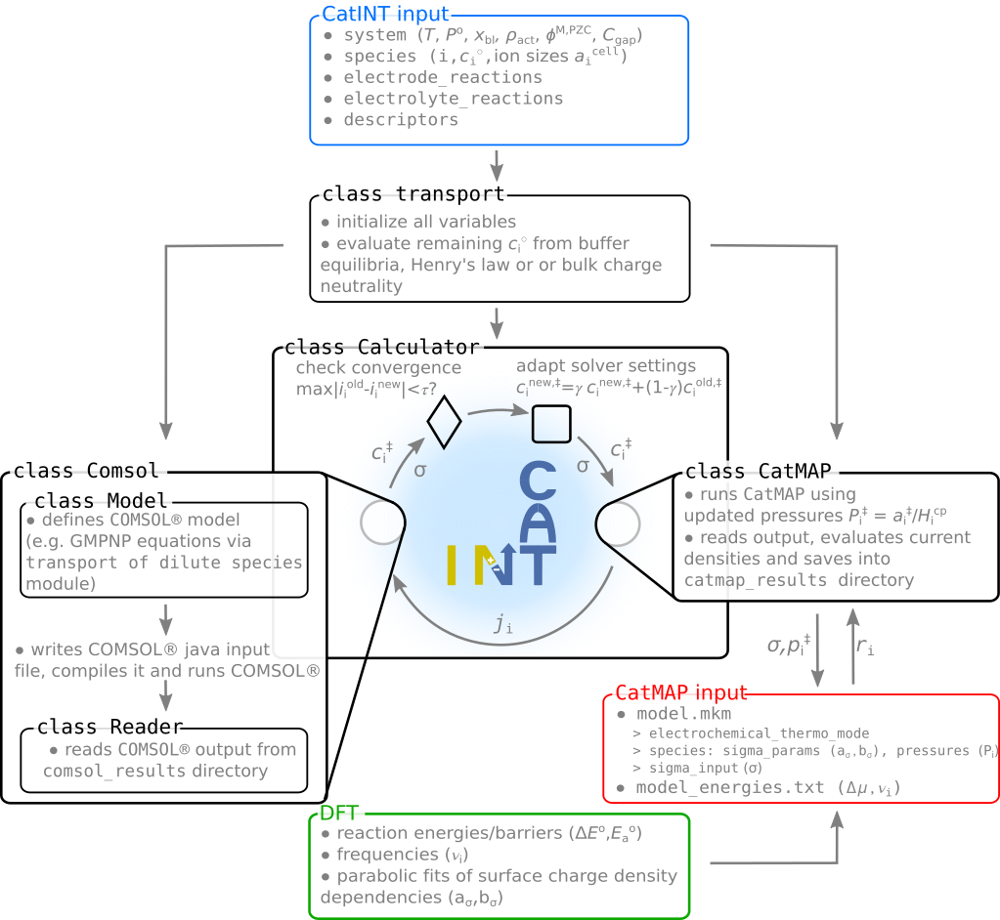

General Usage and Information¶
CatINT is a program package which combines mass transport simulations with micro- kinetic modeling. Mean-field micro-kinetics can be used via
- analytic rate-equations (simple models)
- CatMAP (more involved models)
Mass transport (currently only 1D) is implemented via
- simple finite difference solver of the Poisson-Nernst Planck equations (simple models)
- finite-element program package COMSOL (more involved models, very robust)
The general procedure is shown the following figure:

Documentation (this wiki) is located in the catint/docs folder, and is available online at http://catint.readthedocs.org/.